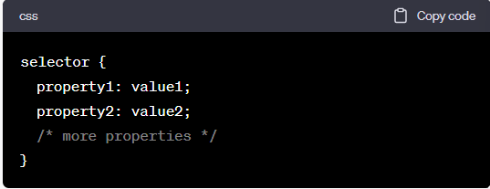

CSS (Cascading Style Sheets) is a styling language used to describe the presentation and visual appearance of HTML documents. It provides a way to control the layout, colors, fonts, and other visual aspects of a web page. CSS works by associating style rules with HTML elements, defining how those elements should be displayed on the screen or printed.
Here are some key aspects and features of CSS:
1. Selectors: CSS uses selectors to target specific HTML elements on which styles will be applied. Selectors can be based on element types, classes, IDs, attributes, or their hierarchical relationships.
2. Style Rules: CSS style rules consist of a selector and a declaration block. The declaration block contains one or more property-value pairs, defining the visual properties to be applied to the selected elements.

3. Cascading: CSS follows a cascading principle, where multiple style rules can apply to the same element based on specificity and inheritance. Conflicting styles are resolved based on the order of rules, specificity, and the use of important declarations.
4. Box Model: CSS treats each HTML element as a rectangular box with properties such as width, height, padding, margin, and border. The box model provides control over the layout and spacing of elements on the page.
5. Responsive Design: CSS enables responsive web design, allowing web pages to adapt to different screen sizes and devices. Media queries and flexible layout techniques like CSS Grid and Flexbox help create responsive and mobile-friendly designs.
6.External Style Sheets: CSS can be written within an HTML document using the style tag, but it is often preferred to use external style sheets. External style sheets are separate CSS files linked to HTML documents using the link tag, allowing for centralized and reusable styles across multiple web pages.
7.Preprocessors and Frameworks: CSS preprocessors like Sass and Less provide additional features such as variables, nesting, mixins, and functions, making CSS authoring more efficient. CSS frameworks like Bootstrap and Foundation offer pre-designed CSS styles and components to speed up web development.
CSS plays a crucial role in separating the presentation layer from the structure and content of web pages. It allows web designers and developers to create visually appealing, consistent, and flexible layouts while maintaining a clear separation of concerns between HTML structure and styling.